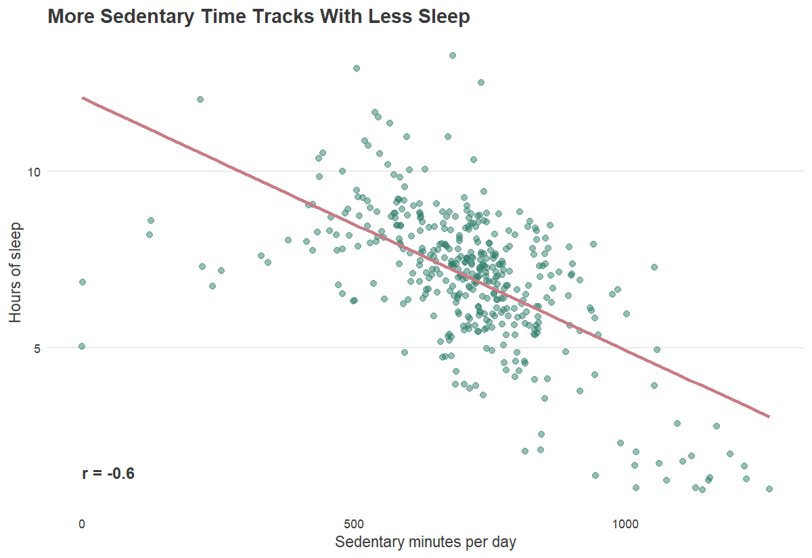
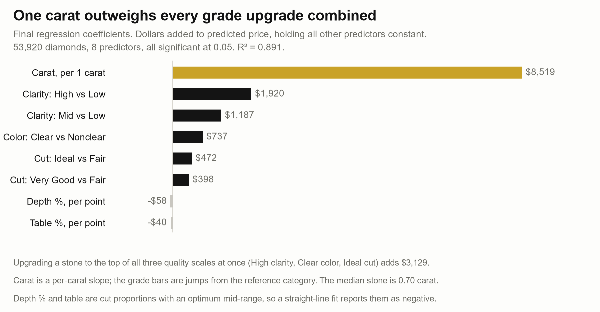

Projects
The projects below span R, SAS, and Excel. Each one follows the same four sections: problem, approach, result, and contribution.
- Flagging Fatal Outcomes in FDA Medical Device Reportsr · classification
- Consolidating Eight Incompatible Sales Feeds in SASsas · data pipeline
- Finding a Marketing Angle in Consumer Wearable Datar · exploratory analysis
- What Actually Drives the Price of a Diamondexcel · regression
Flagging Fatal Outcomes in FDA Medical Device Reports
A rare event classification problem on 4.86 million federal adverse event records, where the most accurate model turns out to be the least useful one.
r · data.table · naive bayes · classification trees · logistic regression · r markdown

Problem
The FDA's MAUDE database collects adverse event reports filed against medical devices. Between 2022 and 2024 alone, that represents 3.2 million distinct reports, far more than any review team can read. Reports describing patient deaths account for only 1.22% of the total, making them a needle in a haystack. The goal was to determine whether the categorical fields already attached to every filing are enough to triage them reliably, pulling fatal outcomes forward so reviewers see them first.
Approach
I ingested roughly 10 GB of pipe-delimited FDA extracts using data.table, including a 7 GB master file containing 20.7 million rows. After date-filtering to 2022–2024, I joined device attributes and problem code tables on the report key. Because a single filing can list multiple devices and problem codes, these many-to-many joins deliberately expanded 6.2 million reports into 8.6 million rows: each device and problem-code pairing is its own observation, so a report listing three devices contributes three rows rather than being collapsed into one and losing the detail that makes it predictable. Dropping records with missing modeling fields left a final working dataset of 4,863,433 rows.
To prevent data leakage, I built a custom grouped train/test split. Because the join extends one report across several rows, a simple row-level split puts different rows from the same report on both sides. In an early iteration, 10,120 out of 100,000 test rows shared a report key with training data. My grouped partition shuffled distinct report keys, assigned entire key blocks to individual samples, and enforced a hard assertion that training and test sets shared zero report keys before fitting models. This produced four disjoint 100,000-row training sets and a shared 100,000-row test set.
Across four independent replicates, I fit three model families: a 3-class Naive Bayes, one-versus-rest CART classification trees with cross-validated pruning, and binary logistic regression on the death outcome. Predictors with thousands of levels were collapsed to their top 31 categories plus an explicit "Other" bucket, as the R tree package caps factors at 32 levels. Collapsing the test set on its own would have produced a different 31 categories than the model trained on, so I mapped the test set onto each training sample's categories instead.
Result
Raw accuracy proved to be a misleading metric. The pruned classification tree achieved 98.96% accuracy by collapsing to a single root node that predicted "no death" for every record, catching zero actual deaths. Logistic regression at a standard 0.5 decision cutoff was similarly ineffective, yielding only 3.6% death recall because predicted probabilities rarely clear 0.5 when the base rate is 1.2%.
Moving the decision threshold down to match the 1.2% training prevalence changed that. Death recall rose to 88.4%, with 85.1% accuracy, 85.0% specificity, and an AUC of 0.928. Feature screening showed the same tradeoff from a different angle. A reduced Naive Bayes model using only four predictors raised overall accuracy from 80.0% to 86.9%, but death recall fell from 83.4% to 54.3%. I kept the full model, because the accuracy the reduced one gained came entirely from injuries and malfunctions, the two outcomes I was not trying to catch.
Put into a live surveillance pipeline, the model would give a review team a queue worth reading instead of an unsorted backlog. Eighty-eight of every hundred fatal outcome reports would surface near the top rather than sitting somewhere inside 3.2 million filings, and the cost is reviewing the 15% of ordinary reports that get flagged alongside them.
Contribution
This started as an undergraduate group project. After the course ended I rebuilt it on my own, reworking the pipeline around the grouped train/test split, writing the factor-alignment helpers, adding validation-based feature screening, and building the threshold-tuned logistic regression. I used AI throughout that rebuild, mainly for reading the raw files, tightening reproducibility, and the logistic regression itself, and the script comments mark where. The accuracy trap above is the clearest case I have run into of a judgment call no tool made for me, and I wrote about that at more length in AI in Analytics.
Consolidating Eight Incompatible Sales Feeds in SAS
Eight regional sources arriving in six different file layouts, reconciled into one standardized dataset and a formatted PDF report.
sas · proc format · proc report · proc means · sgplot · sgpanel · ods pdf

Problem
A beverage distributor's sales data arrived from eight regional sources, each structured differently. One region logged readable product names while another used hyphen-delimited codes. Package sizes came in as free text ("20oz", "20 OZ", "2 Liter"), and dates arrived in three different formats. The files were just as mixed, spanning fixed-width, delimited text, native SAS datasets, and a Microsoft Access database. Raw volume created a separate problem, since comparing counties on units sold rewards the largest county every time, whether or not it is selling well for its size.
Approach
I split the work into two programs, one that cleans and one that reports, so the reporting side can be rerun without reprocessing anything. The cleaning program reads all eight sources, using column, list, or formatted INPUT depending on how each file is laid out. A PROC FORMAT catalog decodes product codes into standardized names, and explicit ATTRIB statements set types, lengths, and labels before any rows are written. Stacking the feeds took an eight-way SET statement with in= flags, which is what keeps track of which source each row came from once they are all in one table.
I parsed the free-text product fields with a series of checks that run in a set order, deriving product category, sub-category, flavor, and container type. I normalized package sizes to a fixed list of allowed values. The order of those checks matters more than it sounds, since "Orangeade" has to be classified before "Orange" or every Orangeade in the file silently becomes an orange soda. Then I merged county population data in by state and county FIPS and computed sales per 1,000 residents, the metric that makes counties comparable to each other.
The reporting program reads those saved datasets and builds the PDF through ODS. It runs PROC MEANS summaries, PROC FREQ crosstabs, PROC SGPLOT charts, and PROC SGPANEL small multiples. The PROC REPORT tables use COMPUTE blocks to shade rows across a five-step grey scale, add computed columns, and turn a value red when a market falls below its threshold.
Result
Normalizing sales by population made counties comparable regardless of size. North Carolina moves roughly twice the unit volume of South Carolina, but the five non-cola flavors sell in nearly identical proportions inside each state. That points at distribution reach, not flavor preference, as what separates a strong market from a weak one.
The report flags counties that fall below per-capita thresholds, with separate cutoffs of 7.5 per 1,000 for diet products and 30 per 1,000 for non-diet. That means the weak counties are already marked and easy for a regional manager to spot.
Contribution
Solo project. I wrote both programs, the cleaning pipeline and the ODS reporting layer.
The raw regional extracts and the Access database belong to the course and are not mine to redistribute. The repository has the SAS source, the generated PDF reports, and CSV exports of the derived datasets, with the original network paths removed from the code.
Finding a Marketing Angle in Consumer Wearable Data
A wellness company went looking for growth opportunities in how people actually use smart devices. Sedentary time, not step count, turned out to be the signal worth marketing on.
r · tidyverse · janitor · lubridate · ggplot2

Problem
Bellabeat, a manufacturer of women's wellness smart devices, wanted to identify consumer growth opportunities by analyzing real-world wearable usage. The available data covered 33 FitBit users over 31 days, with daily activity, hourly steps, intensity, sleep, and weight logs. That is a small, self-selected sample with no demographic information attached, so I treated everything it produced as a hypothesis worth testing rather than a finding to act on.
Approach
I built the pipeline in R with raw and cleaned data kept separate, so the original files are never overwritten. Using lubridate and janitor, I deduplicated records, standardized inconsistent timestamp formats, and checked for missing values across every file. That is how the weight log got dropped, since only 8 of the 33 users ever logged weight. Rather than deleting the 77 days with zero steps, I flagged them as LikelyNonWearDay, which keeps the rows in the data while letting the activity statistics exclude days the device was not worn.
To evaluate activity and sleep on matching days, I joined the daily tables using an inner_join. I then tested two competing hypotheses against sleep duration: total daily steps versus daily sedentary minutes. To communicate findings to non-technical stakeholders, I developed a custom ggplot2 design system (theme_bellabeat) and labeled the key numbers directly on each chart so a figure can be read on its own. Every analytical decision and rationale was tracked in a DECISIONS.md log.
Result
Median daily activity was 8,053 steps, and only 7 of the 33 users averaged 10,000 or more. Users spent 66% of their tracked day sedentary and slept 7.0 hours on average, with 44% of logged nights falling under seven hours. Activity peaked in the early evening, around 18:00.
Of the two, total steps barely tracked with sleep duration (r = -0.19), while sedentary minutes showed a strong negative relationship (r = -0.60). How long someone sits still during the day relates to their sleep far more than how much they move.
That insight points the Time watch at a different pitch; instead of a 10,000-step goal that most of these users never hit, the device can be sold on sitting less, which is the behavior actually tied to better sleep. It also suggests timing in-app prompts to the early evening, when people are already moving rather than being asked to start.
Contribution
Completed as the capstone case study for the Google Data Analytics Certificate. The business prompt and the Kaggle dataset came with the course; the profiling, the cleaning decisions, the statistical comparisons, the chart design, the decision log, and the recommendations were independently executed.
What Actually Drives the Price of a Diamond
Descriptive statistics, probability, inference, and regression on 53,920 diamonds, built in Excel as a documented, version-controlled analysis rather than a one-off worksheet.
excel · hypothesis testing · confidence intervals · empirical distributions · multiple regression · github

Problem
Diamond prices are driven by physical attributes, but which ones actually move the price is worth testing rather than assuming. Before fitting any model we wanted to know what we were working with, so the first questions were whether the standard normal-based tools are even valid on this data, and whether the industry grading scales reduce to categories a model can actually use. The last question was the one the project was built toward: with size and all three quality grades in the same model, how much of the price is weight and how much is grade?
Approach
Starting with the raw dataset, I audited data quality and removed 20 structurally corrupted rows that bypassed standard missing-value checks, resulting in 53,920 clean records. Using the Universal Diamond Grading Scale, I recoded three high-cardinality grading dimensions down to three standardized levels each: Cut (Fair/Good → Fair; Very Good/Premium → Very Good), Color (D–F → Clear; G–J → Nonclear), and Clarity (I1–SI1 → Low; VS2–VS1 → Mid; VVS2–IF → High).
I conducted exploratory distribution profiling to test normality across continuous metrics, derived exact probability scenarios directly from empirical distributions, and constructed one-sample t-tests alongside 95% confidence intervals to evaluate population parameters for price and carat weight. The analysis was structured in Excel using version-controlled, documented logic steps rather than unanchored formulas.
The regression stage started with all 11 predictors, and every one of them came back significant at 0.05. That left nothing to drop on p-values, so the first cut had to come from somewhere else. The correlation matrix showed carat, length, width, and depth all sitting between 0.95 and 0.98, which is what you would expect from four different ways of measuring the size of the same stone. We removed length, width, and depth and kept carat as the single size variable, partly because carat is the industry's own measure and partly because width had already been flagged as unreliable during cleaning.
Result
Continuous diamond metrics violate standard normal-distribution assumptions. Price is severely right-skewed (mean of $3,930.99 versus a median of $2,401; skewness of 1.62), demonstrating that high-value outliers pull the average significantly above what a typical buyer spends. Because normal approximations fail on this distribution, empirical probabilities were used to establish that exactly 27.3% of diamonds in the market exceed $5,000.
Hypothesis testing highlighted how variance impacts statistical significance across metrics. Testing whether mean price is at least $4,000 resulted in a strong rejection (t = -4.02, p = 0.000029; 95% CI: $3,897.34 to $3,964.65). Conversely, testing whether mean carat weight is at least 0.80 failed to reject the benchmark (t = -1.13, p = 0.130). Despite evaluating similar threshold questions, price variance relative to its mean is drastically higher than carat weight variance, directly impacting test sensitivity.
Dropping the three correlated size variables cost almost nothing. The final model runs on 8 predictors and explains 89.1% of the variation in price, against 89.4% with length, width, and depth still in it. Three-tenths of a point for three predictors means they were carrying no information carat did not already have.
That model answers the question the project opened with. Holding everything else constant, one carat is worth about $8,518.61. Moving a stone to the top of all three quality scales at once, High clarity plus Clear color plus Ideal cut, adds $3,129. Weight is worth more than two and a half times the entire grading system.
Depth percentage and table both came out negative, at roughly -$58.29 and -$39.92 per percentage point. Neither is a quality grade; both describe cut proportions, and diamonds are cut to hit a target range because that range maximizes light return. A stone that drifts out of that range in either direction is worth less, so a negative slope is simply what a straight-line fit reports for a variable whose optimum sits in the middle of its range.
Contribution
Partner project for a graduate statistics course. I led the empirical distribution modeling, variable recoding logic, and inferential hypothesis testing stages.